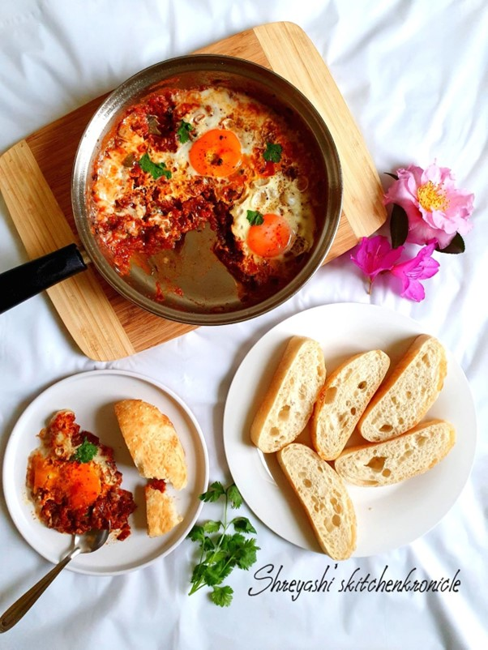
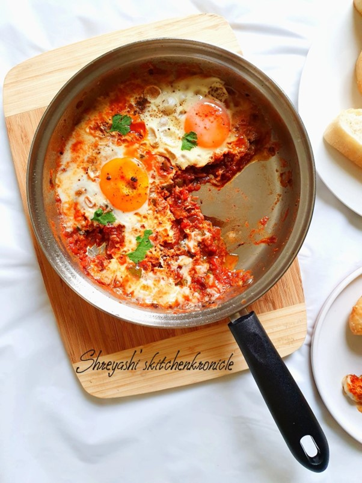

SHAKSHUKA / SHAKSHOUKA
Shakshuka has become very popular dish in all over the world. It is believed to have originated in Middle East. However, some claim it is originated in Ottoman empire. It is also widely known in Israel and in Northeast Africa specifically to Tunisian region..let's not get into all those controversies, instead what amazing to experience is people acceptance towards the food is enormous.
Shakshuka is a quintessential meal in Arab cuisine made with tomatoes, onions, a few middle eastern spices, herbs and topped with poached eggs. It is tomato based stew which is very popular in Yemen, Egypt, Syria, areas in Serbia etc. Of course, there are many variations available depending upon people's creativity, experiments according to their liking. It can also be made with meat, feta cheese and whatever you can think of eating in Shakshuka! Let's come to point now about how to make this delicious recipe that you'll love to enjoy with your family. My version of Shakshuka needs very few ingredients and all of them can be readily available at your home kitchen and also in your local grocery store.
How to make famous vegetarian or eggetarian, gluten-free and healthy Middle Eastern Shakshuka 🍳:
Servings: 4 servings Cooking time: 20 mins Diet: Gluten-free
Ingredients
- 2 tablespoons of Olive oil
- 1 large onion peeled and chopped
- 2 cloves of garlic mince
- 1 red bell pepper chopped
- 4 large ripe tomatoes chopped or you can use 1 can of diced tomatoes (400 gms)
- 1/4 teaspoon of hot pepper flakes
- 1 teaspoon tomato paste
- 1 teaspoon cumin
- 1 teaspoon paprika
- A pinch of sugar to cut the sharp tartness (optional)
- Salt and pepper as per your taste
- 4 large eggs
- Few sprigs of cilantro or parsley
Instructions
- Heat a skillet on stove-top, put two tablespoons of olive oil. When warm put chopped onion and saute till it gets translucent. Then put 2 cloves of minced garlic and cook for few minutes till it's raw aroma goes away.
- Add diced red bell pepper and saute for few minutes. Remember to put the flame on medium throughout the cooking process. Once soft, put chopped tomatoes (if you are using canned tomatoes, absolutely fine!), salt at the same time. Salt helps tomatoes and bell pepper to become mushy. Once it turns to become mushy, put cumin, chilli powder, paprika, tomato paste, pinch of sugar. Mix everything well and let it cook for another 2-3 minutes.
- Check the taste if anything is required to put at this stage according to your taste. Add salt, pepper as per your taste. Also you'll notice the gravy thickened at this stage. Create 4 wholes in 4 corners of the pan by putting aside the tomato base. Crack 4 eggs onto the whole. Put the lid on and let it poach for 3-4 mins.
- I prefer my Shakshuka to be on a bit dry side like this photo. however, you can adjust the gravy base as per your liking. If you don't want to cook your eggs fully, I would recommend you keep an eye on the eggs when half-done, remember to the pan off-heat and let it sit covered for another couple of minutes.
- Finally, put chopped cilantro or parsley (whichever you like) on the top of eggs and your delicious Shakshuka is ready is ready in 20 mins.
- You can eat Shakshuka traditionally like it's eaten with pita bread or you can eat like I did here. I used some Turkish garlic bread topped with sesame seeds and toasted them well. I dipped a morsel of bread in the tomato gravy and those soft poached egg just created a divine feeling in my mouth.